What gets in the way now
Chicken Burger, head chef by PIN, test dataS1On a phone the part's bar is wider than the screen.
414 px of buttons in a 376 px bar. With Chips picked, Done is off the screen and Delete is cut in half.
S2The dock sits on top of the drawer.
It covers the last 67 px of every drawer on a phone. In the part's More, Duplicate, Flip and Stretch are under it.
S3The drawer covers what you are changing.
With More, Colour or Label open on a phone, 60% of the picked part is under the drawer.
S4The same note heads every drawer.
After Draw it for me, "Drawn by the book: side by side..." (55 px) tops Add, Plate, Parts, More, Colour and Label.
S5A new drawing offers five ways to start at once.
Draw it for me, Start from a copy, 7 ingredient chips, an 842 drawing library and Import a drawing (SVG). The drawer is 2,157 px tall on a phone.
S6The plate is seven drop-downs.
Kind, piece, shape, size, rim, finish and colour, a tick box and Save this servingware. No picture of a plate.
S7Some buttons look like links.
The part's More (10 actions) and More tools (12) are underlined words, unlike the dock and the part bar.
S8Two Done buttons.
The drawer's Done takes a 64 px row of its own; the part bar has another.
S9One name, three times.
"Burger bun ... Label: Burger bun" in the part bar, and BURGER BUN heading its More.
S10Three zoom words for what fingers already do.
"- Fit +" in the corner; pinch and the mouse wheel already zoom.
S11The phone's top bar is busy and says little.
"On the..." and "Chicken B...", with "Not saved yet. Kept on this device." on a second line.
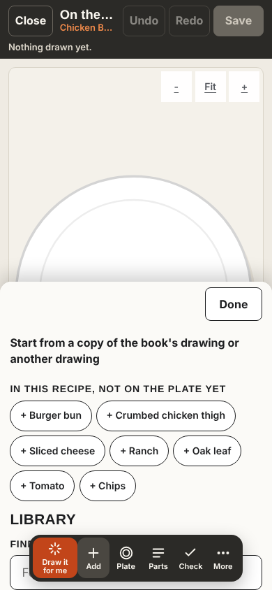
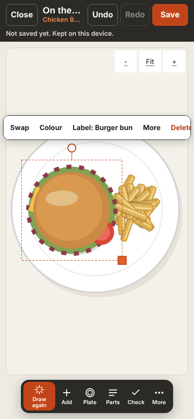
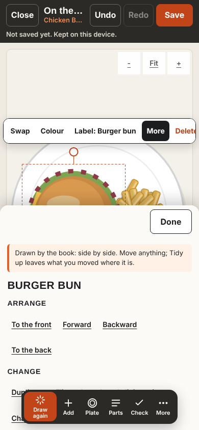
Nine fixes for either design
These can ship first- The part's buttons fit a phone: Colour, Label, More, Delete, Done, each an icon and a word. Swap moves into Label.
- Nothing sits on the food. A panel sits under the canvas; the plate shrinks to stay whole above it.
- Draw it for me speaks once, at the top of the canvas, with Undo and Try another.
- One way to close a panel: its round close button, Escape, or a tap on the plate.
- Plate is pictures. Size, rim, finish and colour sit behind one button.
- Add starts with the recipe: what is not on the plate yet, then Find a drawing. Copy and Import go to the bottom.
- Buttons look like buttons: tiles with an icon, grouped, for More tools and the part's More.
- Fit only. Zoom stays on pinch, the wheel and the + and - keys.
- A one-line top bar: Close, the recipe's name, Undo, Redo, Save.
A. Three steps
A path to followUnder the top bar: 1 Plate, 2 Food, 3 Check, then More. Each step has a small tray with only its own tools. A picked part gets a dark bar just above it.
- Plate: a row of plate, bowl and board pictures.
- Food: Draw it for me leads; then what is not on the plate yet, and the library.
- Check: what is missing or has no label, each with its fix, and Save.
Controls on a phone: new drawing 14, a part picked 15, the part's More 24.
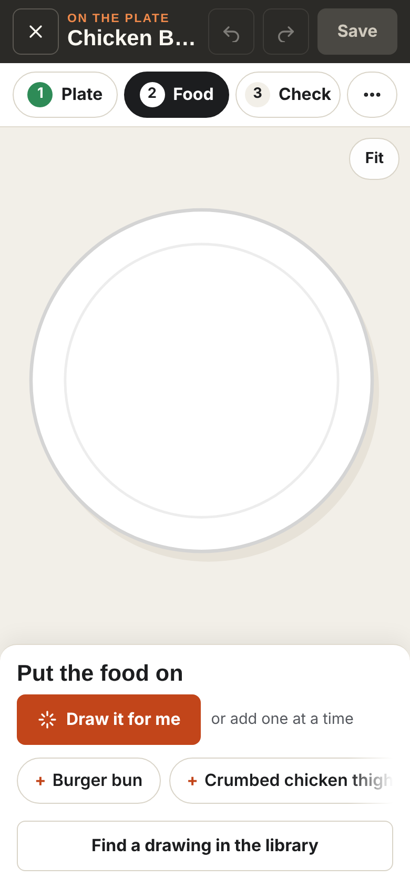
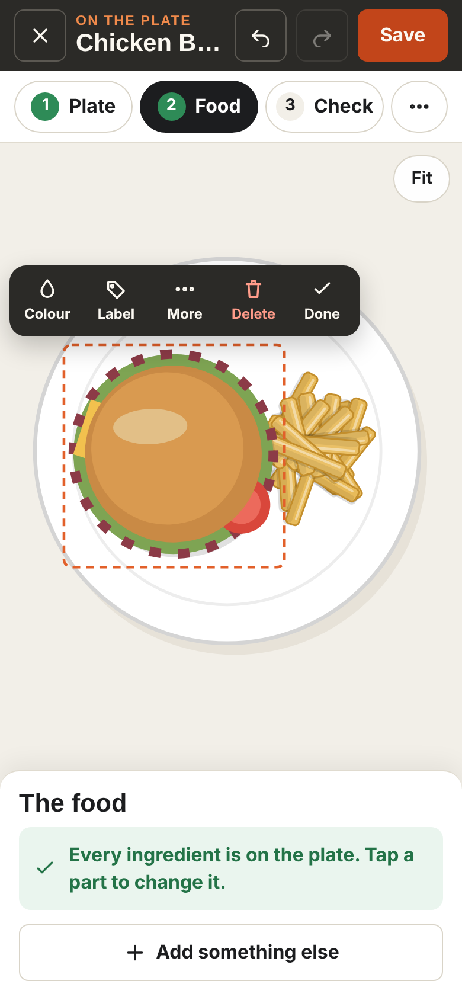
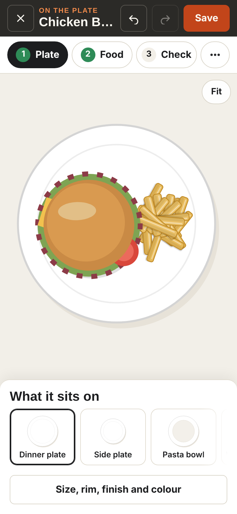
B. Quiet canvas
RecommendedNo tabs. The plate fills the screen. One dark bar at the thumb shows only what you can do now.
- An empty plate: a big Draw it for me in the middle of it. The bar: Add food, Plate, Check, More.
- A part picked: the bar becomes that part's: Colour, Label, More, Delete, Done, always in the same place, never over the food.
- Panels open from the bar, under the canvas on a phone and on the right on a computer. Check shows a count when something needs a look.
Controls on a phone: new drawing 10, a part picked 10, the part's More 21.
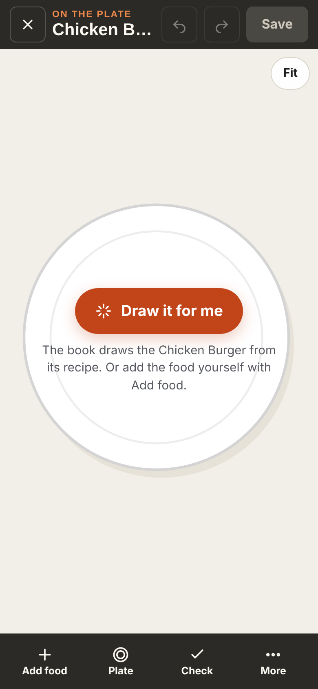
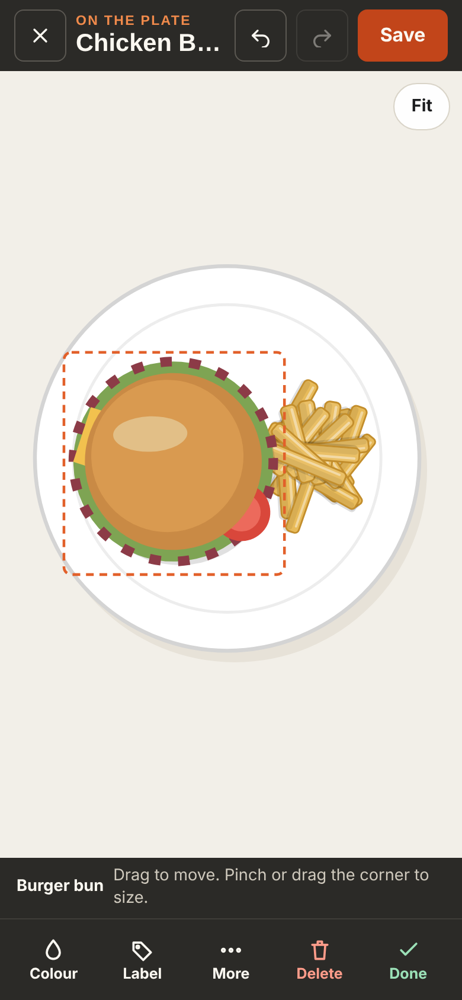
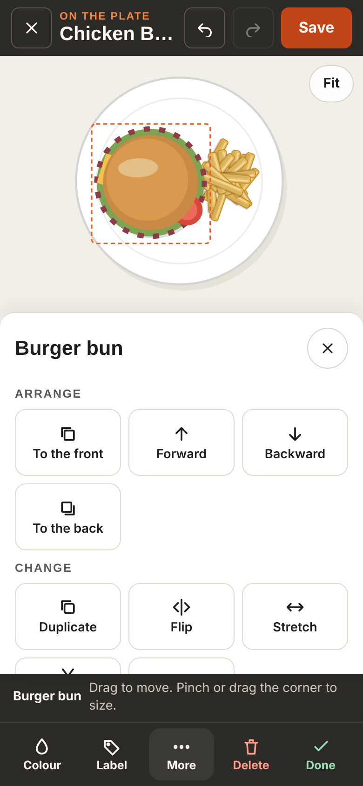
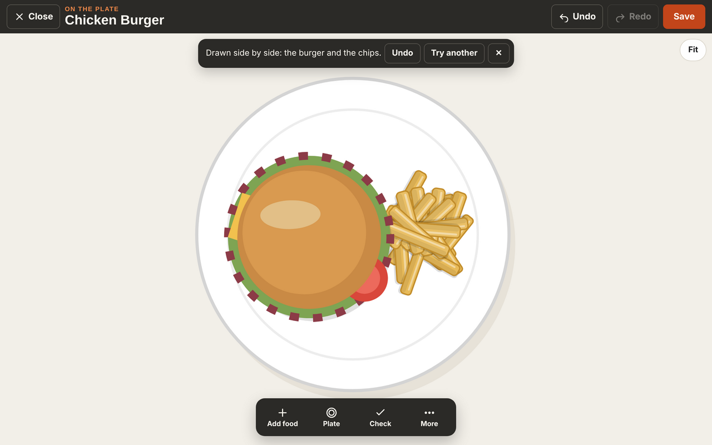
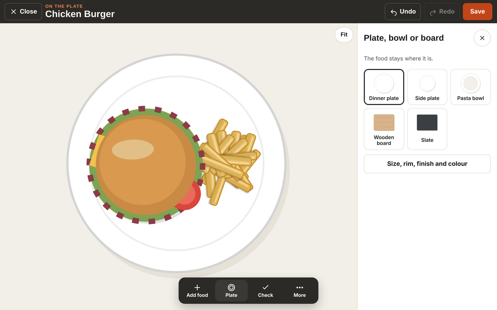
Try them
Example only. Nothing is saved or sent.Side by side
| Today | A. Three steps | B. Quiet canvas | |
|---|---|---|---|
| Controls on a phone, new drawing | 25 | 14 | 10 |
| ... a part picked | 18, Done off screen | 15 | 10 |
| ... the part's More open | 28, three under the dock | 24 | 21 |
| The part's buttons | Floating over the plate, too wide | Floating just above the part | In the bar at the thumb, never over the food |
| Plate | 7 drop-downs | Pictures | Pictures |
| A panel open on a phone | Covers 60% of the part | Under the canvas | Under the canvas |
| Extra row on screen | The steps (60 px) | None | |
| New to learn | Three steps | The bar changes with what you pick | |
| Main risk | Food and Add both list ingredients | The bar's buttons change when a part is picked |
Recommendation: B
B, Quiet canvas. It has the fewest controls in every state, nothing ever covers the food, and the part's buttons are always in the same place at the thumb, like the book's own tab bar. It keeps the full-screen studio you chose on 3 November and needs no new row. A suits someone drawing for the first time who wants a path; you already know the order.
Every tool stays. The rare ones move to More: Draw again, Try another layout, Tidy up, Plating style, Text, Line, Arrow, Box, Oval, the Parts list, Pick several, Snap to centre, Save as a template and Use for another recipe. The full list is in the brief.
What happens next
- You pick A, B or a mix.
- The nine shared fixes ship first, in four small steps, each its own pull request with click tests on a phone and a laptop.
- Then the chosen layout.